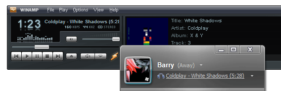
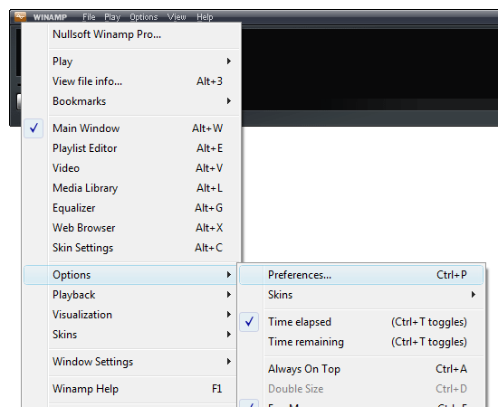
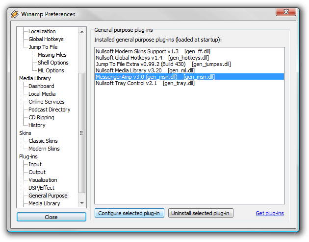
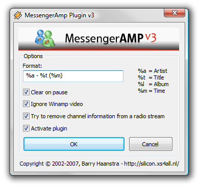
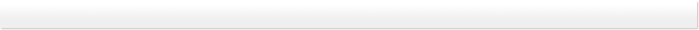

It displays your current Winamp song in the Windows Live Messenger 'Personal Message' field!
Since MSN Messenger 7, this is possible in combination with Windows Media Player, but since you
came here, that's probably not the media player you want to use.
Good news: you can use the Messenger "What I'm Listening To" or "Now Playing" feature with Winamp!

You need Winamp (5.33 or better for MessengerAMP 3), Windows Live Messenger and the
MessengerAMP plugin for Winamp. Download it right here:
If you are an advanced user, you can also download the plugin DLL, without installer:
For Winamp 5.32 and lower (2.x):
Update: 09-11-2007: Created 'MessengerAmp v3'. A new version with Unicode support.
Note 2: read the section 'I want to do a manual install' if you only download the plugin DLL.
Note 3: don't forget to restart Winamp if it was already running during installation.
The plugin automatically configures itself upon the first startup.
To tweak its configuration please use the following steps:
1. Open the Winamp menu, choose Options, then Preferences:

The preferences screen will show up.
2. Select 'General Purpose' located under Plug-ins in the tree menu on the left side of the window.
3. Select 'MessengerAmp v3.x (gen_MSN.dll)' in the list on the right side of the window.
4. Click the button 'Configure selected plug-in':

Now you will see the MessengerAMP configuration window.
5. Change whatever you like. This example shows a different format, displaying the length of the song.
6. Click 'OK' to accept the changes:

To install the plugin manually:
